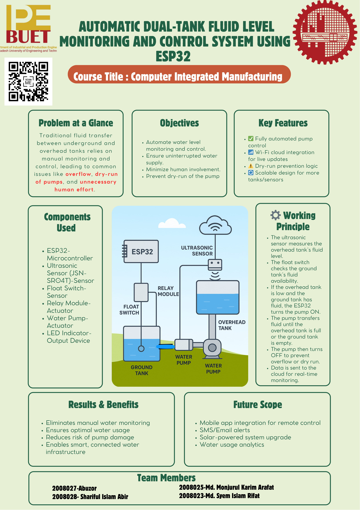

Manual water tank management often leads to overflow, dry running of pumps, and unnecessary water or energy wastage. There is no efficient way to monitor tank levels remotely or control the pump intelligently. This project aims to develop an automated water tank system using ESP32, which monitors the roof and ground tank levels, controls the pump automatically, and uploads real-time data to a cloud database for remote access and monitoring.
| Device / Component | Task / Function |
|---|---|
| Ultrasonic Sensor | Measures water level (distance to water surface) |
| Float Switch | Detects minimum/maximum water level (safety cutoff) |
| ESP32 | Main controller, data upload |
| Water Pump (Relay) | Transfers water between tanks |
| LED Indicator | Status display (tank full/empty) |
| Buzzer (optional) | Alarm for critical water levels |

#include <WiFi.h>
#include <HTTPClient.h>
#include <ArduinoJson.h>
const char* ssid = "abir";
const char* password = "12345678";
const char* serverHost = "ipe20-buet.top";
const char* endpoint = "/get_data.php";
const char* groupName = "groupA12";
const char* sensorName = "Distance";
const char* passcode = "passA12";
#define TRIG_PIN 33
#define ECHO_PIN 26
#define FLOAT_SWITCH_PIN 32
#define LED_PIN 25
#define RELAY_PIN 27
WiFiClient client;
void setup() {
Serial.begin(115200);
pinMode(TRIG_PIN, OUTPUT);
pinMode(ECHO_PIN, INPUT);
pinMode(FLOAT_SWITCH_PIN, INPUT_PULLUP);
pinMode(LED_PIN, OUTPUT);
pinMode(RELAY_PIN, OUTPUT);
WiFi.begin(ssid, password);
while (WiFi.status() != WL_CONNECTED) { delay(300); }
}
float measureDistance() {
digitalWrite(TRIG_PIN, LOW);
delayMicroseconds(2);
digitalWrite(TRIG_PIN, HIGH);
delayMicroseconds(10);
digitalWrite(TRIG_PIN, LOW);
long duration = pulseIn(ECHO_PIN, HIGH, 30000);
if (duration == 0) return -1.0;
float distance = duration * 0.034 / 2;
return distance;
}
void sendToServer(float distance) {
if (WiFi.status() != WL_CONNECTED) return;
HTTPClient http;
String url = String("http://") + serverHost + endpoint +
"?g=" + groupName +
"&sn=" + sensorName +
"&sd=" + String(distance, 2) +
"&p=" + passcode +
"&format=json";
http.begin(client, url);
int httpCode = http.GET();
if (httpCode > 0) {
String response = http.getString();
StaticJsonDocument<256> doc;
DeserializationError err = deserializeJson(doc, response);
if (!err) { int feedback = doc["binary_feedback"] | 0; }
}
http.end();
}
void loop() {
float distance = measureDistance();
if (distance > 0 && distance < 500) sendToServer(distance);
int floatState = digitalRead(FLOAT_SWITCH_PIN);
if (floatState == LOW) {
digitalWrite(LED_PIN, HIGH);
digitalWrite(RELAY_PIN, LOW);
} else {
digitalWrite(LED_PIN, LOW);
digitalWrite(RELAY_PIN, HIGH);
}
delay(5000);
}